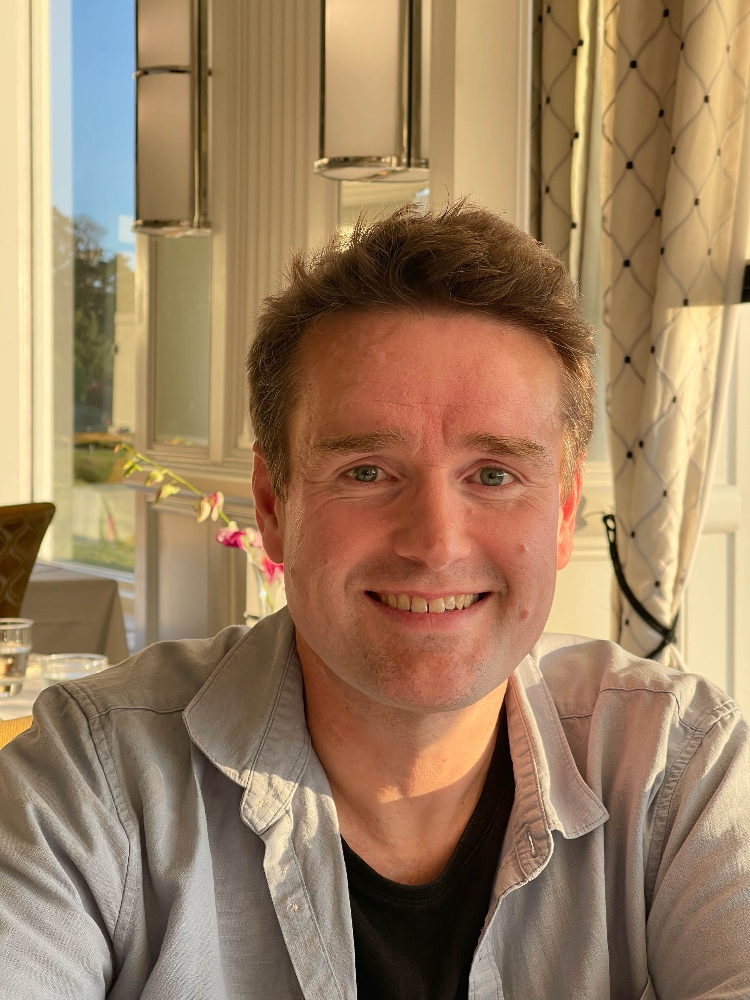

Open by design
Resources are free to use, without advertising, paywalls or compulsory accounts.
We believe that high-quality music educational resources should be easy to find, enjoyable to use and freely available. That's why our resources are open to everyone, without advertising or paywalls.
Learning music is an incredibly exciting journey. There is so much to explore, from developing instrumental technique and aural skills to improvisation, composition, electronic music, orchestration and ensemble performance. You might be learning your first few notes, writing a pop song, experimenting with synthesisers or composing a symphony. The possibilities are almost endless.
We created SAJA Music because, as musicians and educators, we often found ourselves searching for learning resources that simply weren't available, or weren't as accessible, engaging or useful as we hoped. We also kept meeting students who were eager to learn and teachers who struggled to find high-quality, freely available materials. We don't believe educators should have to compromise on quality simply because they don't have access to expensive resources or subscriptions.
We wanted to create a place where people could explore music freely, follow their curiosity and discover new things, regardless of their age, experience or musical interests. Somewhere that brings together traditional musicianship, creative exploration and modern technology, with resources that are genuinely useful for both independent learners and teachers.
SAJA Music is an ongoing project, shaped by our experiences teaching, performing, composing and researching music. We're continually adding new resources, experimenting with ideas and refining what we've created. Above all, we hope to share some of the excitement and enjoyment that comes from learning music.
Resources are free to use, without advertising, paywalls or compulsory accounts.
Browse individual activities or follow a suggested pathway, at your own pace.
Interactive exercises, downloadable materials and clear explanations designed for practice and teaching.
SAJA Music was founded by Sally Howe and Jamie Gabriel. Between us, we bring many years of experience teaching, composing, recording and performing music.

Co-Founder · Education & Technology
Jamie is a multi-instrumentalist, composer and educator with a PhD in computational musicology. He brings extensive experience in music teaching, software development and educational technology, alongside a background in corporate IT, data governance and information security. His expertise spans privacy, machine learning and large-scale data analytics. He is also a long-standing advocate of open-source software and open access to knowledge.

Co-Founder · Music & Education
Sally is a composer, vocalist, performer and educator with a Bachelor of Music from the University of Auckland. She brings many years of experience teaching and making music, with a focus on creativity, composition and performance.
Together we also perform and record as SAJA Project, exploring modern jazz, electronic music, improvisation and experimental soundscapes.
Interested in piano, guitar, improvisation, music theory or composition lessons? We'd love to hear what you're hoping to learn.
We also welcome questions, feedback and suggestions about the free learning resources.